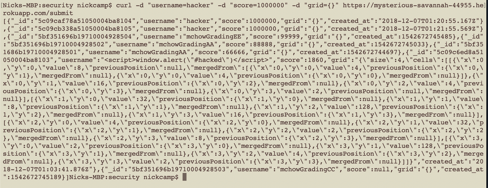

Introduction
In this project, we were asked to find as many security problems as we could with a partner's assignment 3. Assignment 3 was a modded 2048 game, which sent user data to a server. The server was hosted on Heroku and used MongoDB's free "mongolab" service. The 2048 game was cloned from the public 2048 git repository, and details of the assignment can be found at https://tuftsdev.github.io/WebProgramming/assignments/a3.html
Methodology
My methodology for finding security faults began with reading the target source code to identiy easy areas of access. I first started with trying cross site scripting, also known as XSS. This was because I knew that it would be an easy target thanks to reccomendations from friends, who I have credited below in the Reference section. The second approach I took was to find if I could mess with the database in any way. This lead me to trying to use curl to submit false game data. Finally, I asked around for more leads for vulnerabilities
Abstract of Findings
The issues that I found were XSS, CORS, and NoSQL. In laymans terms, this means that I found vulnerabilities in the following manners:
1: Malicious code was allowed to be run, injected through server provided dialogue boxes
2: Data was able to be sent to the server through "3rd parties" that were not intended to have access. This means that just because data is in the database does not mean that it came from the intended client!
3: Data in the database was not secure, and anyone had access to all user data including usernames. In this case, the data was not very sensitive, but it very much could have been.
Issues Found
Issue: XSS
Location: 2048 game (username alert)
Severity: Medium to High (depending on imagination of hacker)
Description: By submitting script tags in the username alert field after the game ends, you can send your own javascript to the scores site
Proof:
Resolution: By validating data (not allowing < or > in submissions) you can prevent hackers from sending their own script tags
Issue: Fabricating a score / subimssion / CORS
Location: Server side
Severity: Low - Medium severity (unless you take your highscores very seriously) as you could overload the server, or at least ruin the integrity of the highscores
Description: by using Curl I was able to fake a submission to the game server. This means that I could get any score that I wanted, putting me at the top of the scoreboard!

Proof:
Resolution: By changing the way the server's CORS allowed submission, you could prevent anyone or anywhere submitting data. Instead, you could just let the valid 2048 client submit to the database.
Issue: Being able to see all user data from the server / NoSQL
Location: Server side
Severity: High - Very High, especially if you are working with more sensitive data than just people's names and 2048 games
Description: In the /scores.json GET, I was able to query all the users, and I retrieved all their data in JSON format. For reference, without the query I was only able to retrieve empty JSON.
Proof:

Resolution: using data validation, you can prevent malitious mongodb queries. This can be done manually or with libraries that can take care of the heavy lifting for you.
Conclusion
In conclusion, this 2048 client and its partner heroku server and mongo database are not very secure. With just a few hours of education and trying, I was able to find vulnerabilities of varying severity. I would consider looking into any sort of security, as it is obvious that there was little to no attempt at security. However, Ming told us that we did not need to worry about it for assignment 3, so that makes a lot of sense. I would also point out that the costs would highly outweigh any benefits when it comes to implementing more security for this game and its score server. This is because we are motivated solely by grades here, and you would not get a better grade from having a more secure assignment 3. If anything, you would anger your partner as cracking the game would be next to impossible as we only know how to exploit basic security vulnerabilities.
References
I would like to thank Trent Turner and Ethan Chen for giving me direction for how to start identifying security vulnerabilities. I would also like to thank Ming Chow for his examples on his TuftsDev github repository. Finally, I used https://blog.sqreen.io/prevent-nosql-injections-mongodb-node-js/ as a reference on NoSQL.